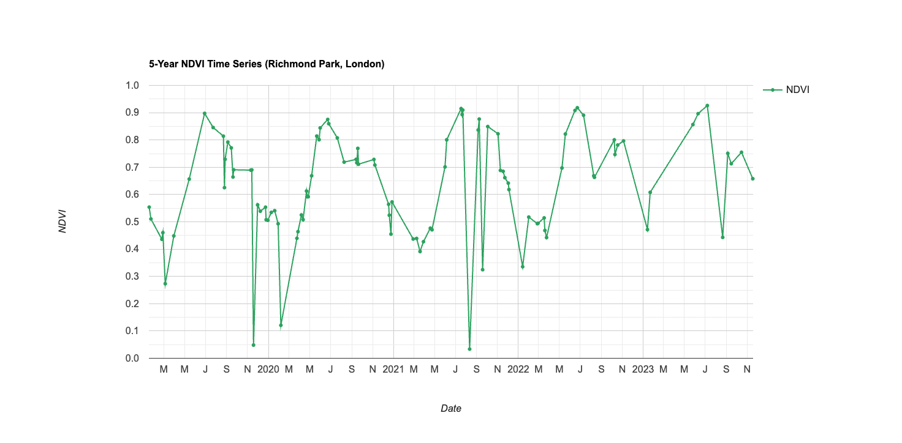

Week 5: Google Earth Engine I
Summary
This week marked a fundamental shift from local, hardware-dependent processing in R to cloud-based, planetary-scale analysis using Google Earth Engine (GEE). Where previous weeks required downloading gigabytes of Landsat tiles, managing file paths, and waiting minutes for texture computations to complete on a local machine, GEE performs equivalent operations in seconds on Google’s server infrastructure — a difference that is not merely convenient but structurally changes what kinds of analysis are feasible.
The core conceptual framework is the client-server model. The JavaScript code written in the GEE Code Editor (client) does not process data locally — it constructs a computational graph that is transmitted to Google’s servers, where the actual computation occurs on distributed infrastructure. Only the final result (a rendered map tile, a statistic, a chart) is returned to the browser. This architecture has three important consequences. First, data never needs to be downloaded: the entire Landsat, Sentinel, and MODIS archives (among others) are co-located with the computation, eliminating the bottleneck that dominated previous weeks’ workflows. Second, iteration must be rethought: traditional for loops execute sequentially on the client and are prohibitively slow; instead, GEE uses the .map() function to apply operations across entire ee.ImageCollection objects in parallel on the server (Gorelick et al. 2017). Third, GEE’s lazy evaluation means that computation only occurs when a result is explicitly requested — adding layers to the map, printing statistics, or exporting data — which makes exploratory analysis fast but can make debugging unintuitive.
The practical introduced key GEE operations through a Landsat workflow over Delhi: loading an ee.ImageCollection, filtering by date, bounds, and cloud cover, applying scale factors (the same × 0.0000275 + (−0.2) conversion from Week 3, but now wrapped in a .map() function applied to the entire collection), reducing the collection to a single composite via ee.Reducer.median(), computing texture via .glcmTexture(), and running PCA through eigen decomposition. What took dozens of lines and several minutes of processing in R (Week 3) was accomplished in a fraction of the time — the same analytical workflow, but at a fundamentally different scale.
One concept I found particularly important is the scale (resolution) model. GEE does not have a fixed processing resolution — it dynamically adjusts computation based on the zoom level of the map view and the scale parameter specified in reduceRegion() calls. This means the same code can produce different numerical results depending on the context in which it is executed, which is a potential source of error if not explicitly controlled. Gorelick et al. (2017) note that users should always specify the scale parameter rather than relying on defaults, particularly when exporting data or computing statistics for policy-relevant applications.
Application
To build on the Week 4 policy analysis of London’s Urban Greening Factor (Policy G5), I used GEE to construct a 5-year NDVI time-series for Richmond Park — one of London’s largest green spaces — using Sentinel-2 surface reflectance data from 2019 to 2023. The aim was to demonstrate that GEE enables temporal monitoring at a scale and speed impossible with local processing.
The workflow in GEE follows a reproducible pattern:
```{js, eval=FALSE} // Load Sentinel-2 SR, filter by date, bounds, and cloud cover var s2 = ee.ImageCollection(‘COPERNICUS/S2_SR_HARMONIZED’) .filterDate(‘2019-01-01’, ‘2024-01-01’) .filterBounds(richmond_park) .filter(ee.Filter.lt(‘CLOUDY_PIXEL_PERCENTAGE’, 10));
// Compute NDVI for each image in the collection var addNDVI = function(image) { var ndvi = image.normalizedDifference([‘B8’, ‘B4’]).rename(‘NDVI’); return image.addBands(ndvi); };
var s2_ndvi = s2.map(addNDVI);
// Chart the NDVI time-series var chart = ui.Chart.image.series({ imageCollection: s2_ndvi.select(‘NDVI’), region: richmond_park, reducer: ee.Reducer.mean(), scale: 10 }).setOptions({title: ‘NDVI Time-Series: Richmond Park (2019–2023)’});
print(chart); ```

The time-series in Figure 6.1 reveals several patterns. The regular seasonal phenology — peak greenness in June-July, minimum in December-January — is the expected signal from deciduous broadleaved vegetation in a temperate maritime climate. More interesting is the anomalous dip in summer 2022, which coincides with the record-breaking heatwave that saw temperatures exceed 40°C in London for the first time. This kind of event detection — identifying departures from expected seasonal patterns — is precisely what makes temporal EO analysis valuable for policy: it provides spatially explicit, objective evidence of environmental stress that complements ground-based weather station data.
Amani et al. (2020) conducted a comprehensive review of GEE applications across remote sensing domains and found that urban and environmental monitoring studies have grown exponentially since 2017, driven by GEE’s elimination of data storage and processing barriers. They note that the platform has been particularly transformative for time-series analysis — studies that would previously require months of data management now take hours. However, they also flag that the ease of producing results in GEE can lead to methodologically superficial analyses if users do not carefully specify scale parameters, cloud masking thresholds, and temporal compositing strategies — choices that materially affect outputs but are easy to overlook when computation is instant.
For London’s Policy G5 monitoring, this application demonstrates a concrete pathway: an annual or seasonal Sentinel-2 NDVI composite across all London boroughs, computed entirely in GEE, could provide the GLA with a systematic, repeatable baseline for tracking whether the Urban Greening Factor is delivering measurable increases in vegetation cover. The processing cost is effectively zero — the only requirement is the analytical expertise to design an appropriate workflow, which is exactly what this module is teaching.
Reflection
The most visceral shift this week was the contrast in processing speed and scale. In Week 3, downloading two Landsat tiles for London, loading them in R, mosaicking, scaling, computing NDVI, running GLCM texture, and performing PCA took the better part of an afternoon and required careful memory management. In GEE, the equivalent workflow — applied not to two tiles but to an entire multi-year image collection — executes in seconds. This is not a marginal improvement; it fundamentally changes what questions are worth asking. Time-series analysis across a decade, comparison of seasonal patterns across cities, continental-scale land cover mapping — all become feasible as routine exploratory analysis rather than major computational undertakings.
However, critical evaluation is warranted. GEE represents a significant vendor lock-in risk: the entire analytical workflow — data access, processing, visualisation — depends on Google’s proprietary infrastructure. Gorelick et al. (2017) present GEE as an open platform, but the server-side computation engine is not open-source, and Google retains the ability to modify pricing, API access, or data availability. If Google were to charge for GEE access (which has been discussed), research workflows built entirely on the platform would face immediate disruption. The emergence of alternatives — Microsoft’s Planetary Computer, the Open Data Cube framework, and cloud-optimised GeoTIFF access via STAC APIs — suggests that the field is aware of this risk and moving toward more distributed architectures.
A practical limitation I encountered is that GEE excels at raster algebra and temporal reduction (turning petabytes into meaningful statistics) but is less suited to complex vector operations — spatial joins, network analysis, topological queries — that remain the domain of desktop GIS or spatial databases like PostGIS. For the kind of urban analysis that links EO-derived layers (NDVI, LST) to socio-economic data (deprivation indices, census demographics), the realistic workflow is to use GEE as a data reduction engine — producing clean, composited rasters at the city scale — and then exporting those products for integration with vector data in R, Python, or QGIS. This hybrid approach combines the scale advantages of cloud processing with the analytical flexibility of local tools, and seems like the most robust workflow for the kind of policy-relevant urban analytics this module is building toward.